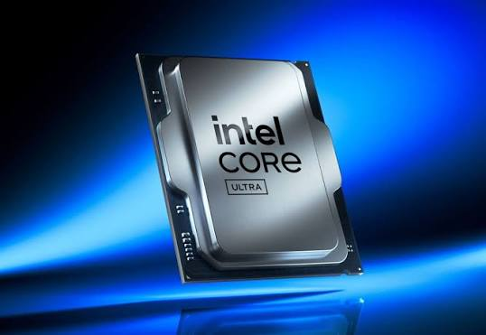

그러면 TJMAX(cpu열한계온도) 말고 90도초과시 클럭을 51배수로 락해버리는 기능을 추가하자!!!
노바레이크s는 AMD X3D모델처럼 대용량 캐쉬를 추가탑재하는 인텔이 오랜만에 내놓는 구성의 신형 CPU임. 문제는 저모델 경쟁대상이 AMD 9800X3D 9950X3D2 같은 오버클럭이 당연히 되는 하이엔드 CPU인데, 오히려 90도에서 배수락이 걸리는 기능을 추가함은 물론 이것을 유저가 선택하지 못하게 시스템 고정값으로 한다고함
한마디로 쿨링솔루션을 때려박아서 스로틀링 온도를 89도 이하로 제어하는한에서만 부스터클럭 및 오버클럭값을 잡던가 해야함
한줄요약 : 오버클럭? 컴퓨터 비싸다 강제 성능제어 호잇
나 구팔삼디 85도 제한걸고 써서 모르는데 실제로 저 시피유 쓰는 사람들 오버클럭해서 90도 위로 올림?